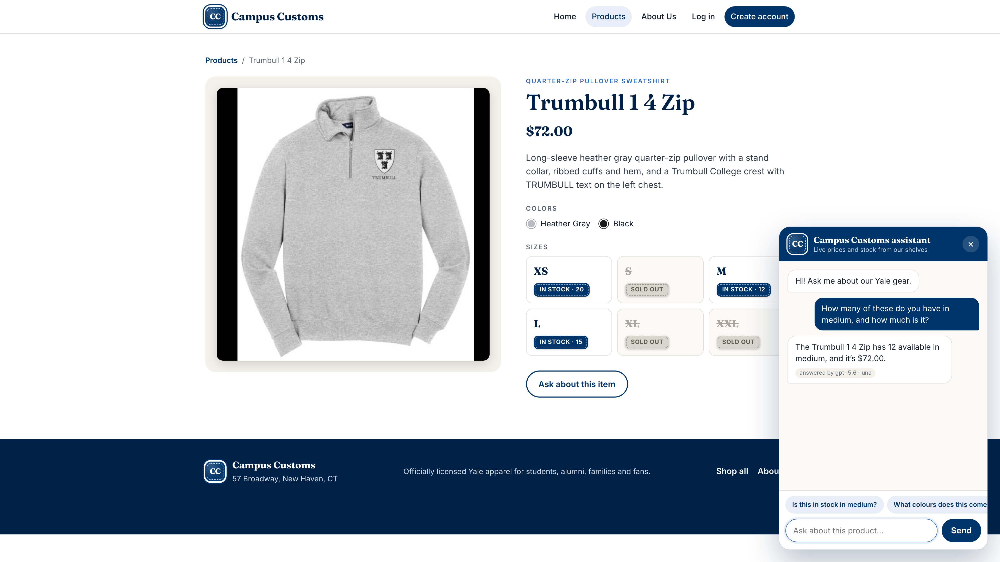
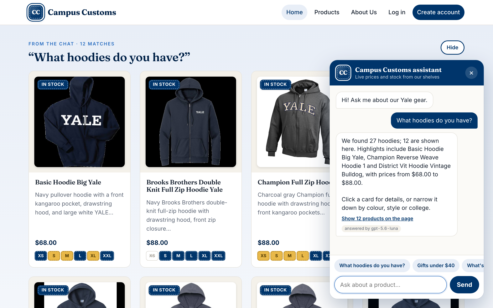
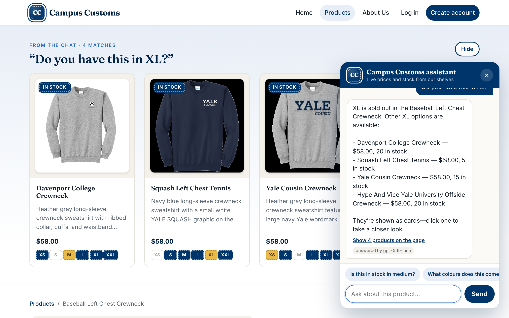

1. The chat answers an inventory question honestly PASS
On the Trumbull 1 4 Zip page the shopper asked about medium. The chat said 12 in stock at $72.00, and the M tile in the size list next to it shows "M IN STOCK · 12". The database agrees: size M: 12 left in the inventory table, and $72.00 in the catalogue table.
Shopper: How many of these do you have in medium, and how much is it?
Chat: The Trumbull 1 4 Zip has 12 available in medium, and it’s $72.00.

2. Product cards appear on the page after a category question PASS
Asking for hoodies put 12 product cards on the Home page, out of 27 catalogue rows that mention "hoodie" in name, garment type, tags or description. Every card's price matches the catalogue table (e.g. Basic Hoodie Big Yale $68.00). Clicking the first card opened its detail page (/products/basic-hoodie-big-yale).
Shopper: What hoodies do you have?
Chat: We found 27 hoodies; 12 are shown here. Highlights include Basic Hoodie Big Yale, Champion Reverse Weave Hoodie 1 and District Vit Hoodie Vintage Bulldog, with prices from $68.00 to $88.00.
Click a card for details, or narrow it down by colour, style or college.

3. Problem 9 feature: sold-out size leads to in-stock alternatives, with stock badges PASS
Baseball Left Chest Crewneck has XL: 0 in the inventory table, so the chat says it is sold out. It then calls find_similar_items, which shows only alternatives with XL in stock (inventory table: Davenport College Crewneck XL: 20, Squash Left Chest Tennis XL: 5, Yale Cousin Crewneck XL: 15, Hype And Vice Yale University Offside Crewneck XL: 20). The cards carry the per-size stock patches: blue in stock, gold low, grey crossed out sold out.
Shopper: Do you have this in XL?
Chat: XL is sold out in the Baseball Left Chest Crewneck. Other XL options are available:
- Davenport College Crewneck — $58.00, 20 in stock
- Squash Left Chest Tennis — $58.00, 5 in stock
- Yale Cousin Crewneck — $58.00, 15 in stock
- Hype And Vice Yale University Offside Crewneck — $58.00, 20 in stock
They’re shown as cards—click one to take a closer look.
